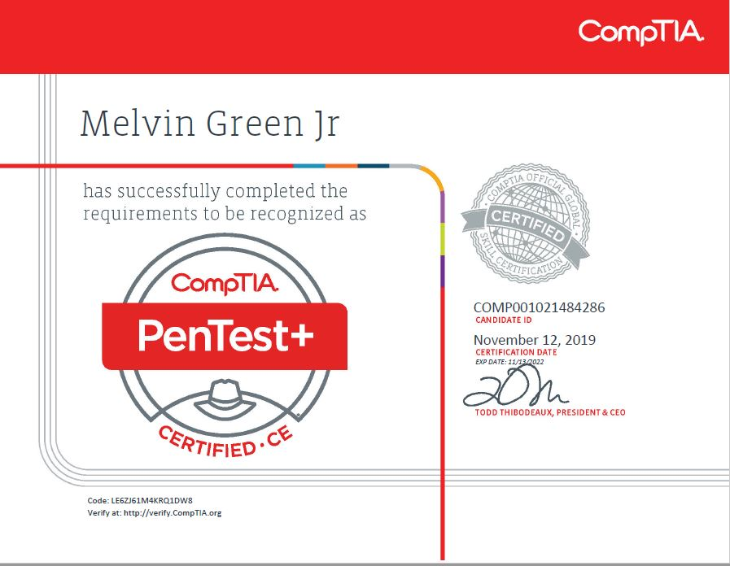
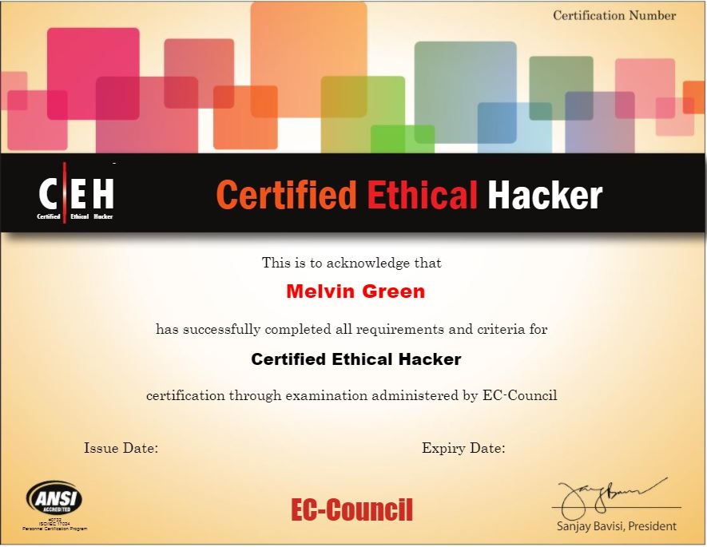

Comptia Certified Technical Trainer
CompTIA CTT+, Network +, Security+, CySA+, PenTest+, CASP+

CEH
EC-Council’s Certified Ethical Hacker is an approved baseline certification for the following Cyber Security Service Provider sections: CSSP Analyst, Auditor, Infrastructure Support, and Incident Response

CCNA CyberOps
As of July 2018, The United States Department of Defense (DoD) has approved the Cisco CCNA Cyber Ops Certification (now called Cisco Certified CyberOps Associate certification) for the DoD 8570.01-M for the CSSP Analyst and CCSP Incident Responder categories.